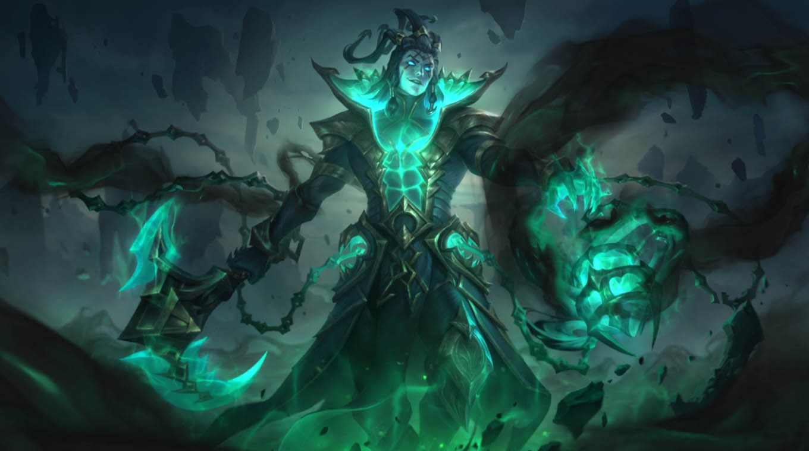
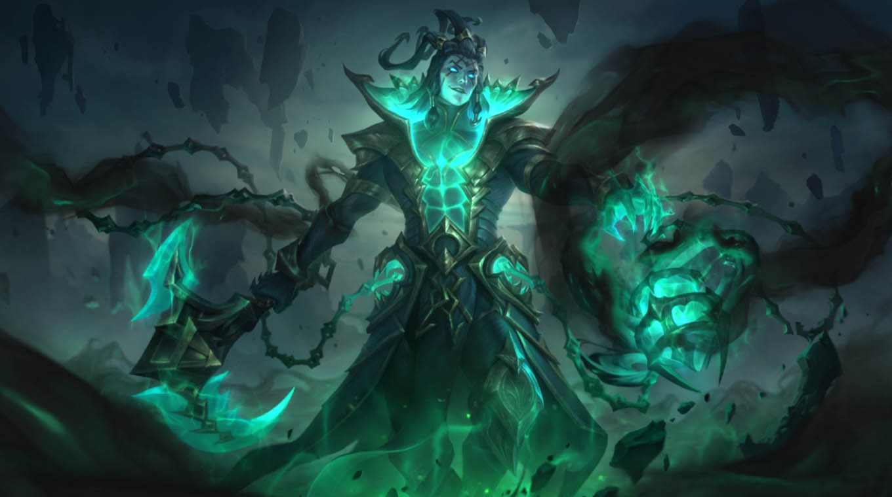
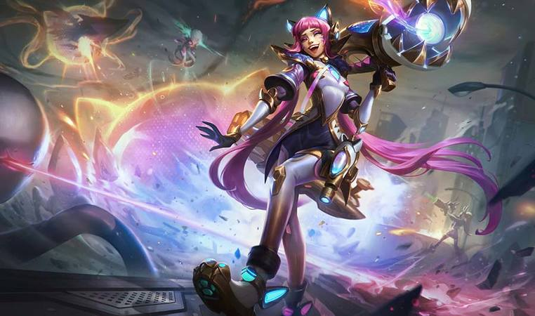
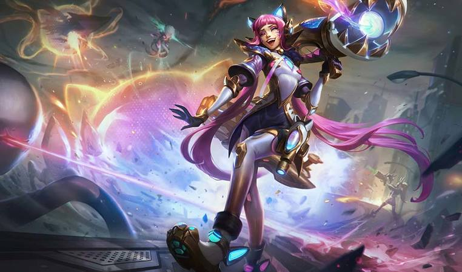

Informations
League of legends er et videospil i kategorien MOBA. I spillet opdeles 10 spillere på 2 forskellige hold, som hver især består af følgende:
League of legends er et videospil i kategorien MOBA. I spillet opdeles 10 spillere på 2 forskellige hold, som hver især består af følgende:
Mappen er delt op således, at man på hvert hold har 1 i toppen (toplaner), 1 i junglen (jungler) 1 i midlane (midlaner) samt 2 i bunden kaldet ADC (marksman) og supporten.
Spillet går nu ud på, at tjene guld til ens hold og sig selv. Guldet bruges til at købe items som forbedre og styrker din karakter. Jo flere items, desto stærkere karakter. Guldet kan opnås ved at gøre følgende:
Hver karakter i spillet har et default udseende. Ønsker man at ændre sin karakters udseende er dette muligt, dog skal man have fat i sin egen pengepung. Riot som også er producenten af spillet, har gjort det muligt at købe Riot Points (RP). Disse kan bruges til at købe forskellige skins til de karakter man spiller. Når man først har købt sit skin er det permanent. Har man flere skins til 1 karakter, kan man skifte imellem dem.


 

 
